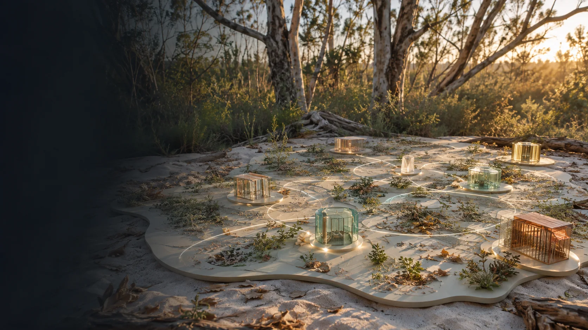

Skip to content
Minjerribah Site and Service Ideas
Public workbench and source trail
Menu
Home
7 Mile
Sand and Screen
9 Ballow Road
Men's camp
Women and children
Housing pathways
Aged care and longevity
82 Claytons Road
Organisation builder
Funding pathways
Related public work
Source trail
Site map

Site map.
Fourteen destinations, plus this site map.
Generated concept image
Start
Home
7 Mile
Sand and Screen
Sites and services
9 Ballow Road
Men's alcohol and drug free camp
Safe place for women and children
Housing and supported living
Aged care, longevity and rejuvenation research
82 Claytons Road
Organisations, funding and references
Organisation builder for each site and service
Funding and operating vehicles
Related public work
Source trail
Source documents
Previous
Source documents
Next
Home
↑